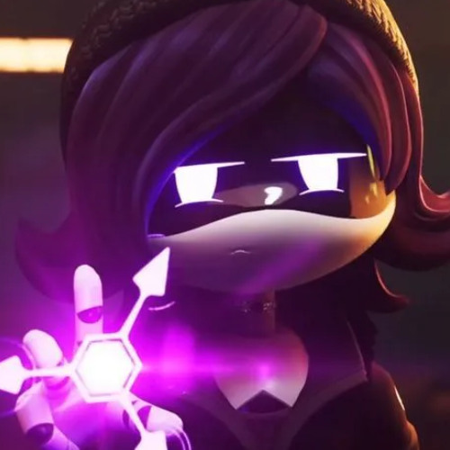
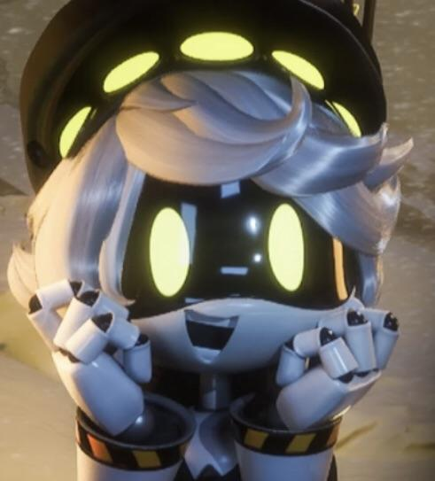

Uzi
Uzi Doorman, mas conocida como Uzi, es la protagonista principal de Murder Drones. Es la hija rebelde de Khan y Nori Doorman. Al principio buscaba luchar contra los Drones Desmontadores que persiguen a sus compañeros, pero con el tiempo hace amistad con N y descubren el Solucionador Absoluto.

Serial Designation N
N es el coprotagonista. Antes era un Drone Trabajador, pero fue convertido en Desmontador. Llego a Copper 9 con una misión, pero se hizo amigo de Uzi y juntos descubren la verdad sobre el Solucionador Absoluto.

Serial Designation V
V tambien era una Drone Trabajadora antes de convertirse en Desmontadora. Fue enviada a eliminar a los demas, pero cuando N se une a Uzi, ella se enfrenta a ellos hasta que los tres descubren la verdad. V sabe más de lo que deja ver.